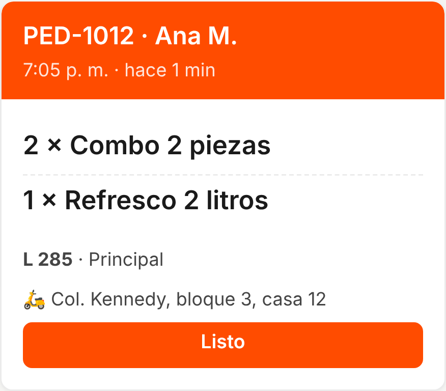
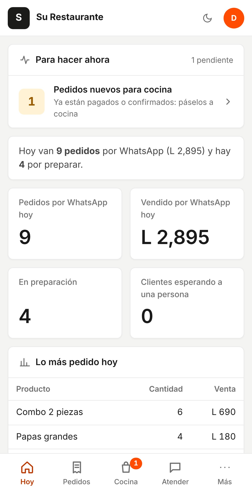

¿Lo vemos
con su menú?
con su menú?
Se lo armamos con sus productos y sus precios, para que lo pruebe antes de decidir nada.
Rodrigo Herrera, por WhatsApp
+1 (765) 543-4251
 Casa Digital by Clientia Tech
Casa Digital by Clientia TechBuenas, ¿tienen servicio a domicilio?
Quiero 2 combos y un refresco
¿Cuánto cuesta el combo familiar?
Hola, ¿me pueden atender?
¿Todavía están atendiendo?
¿Hola? Escribí hace rato


Casa Digital by Clientia Tech